Roh sistem
Agih ikut beban, bukan ikut suka.
Itulah keseluruhan sistem ini dalam satu ayat. Sebelum belajar butang mana perlu ditekan, fahami dahulu masalah yang cuba diselesaikan.
Agihan tugas selalunya bergantung pada ingatan dan kebiasaan. Guru yang boleh diharap dilantik lagi dan lagi. Guru yang bekerja secara senyap terlepas pandang. Senarai jawatankuasa nampak lengkap, tetapi tiada sesiapa dapat menjawab soalan paling asas: beban siapa paling berat sekarang?
Tiga soalan yang dijawab sistem
Pegangan yang membentuk sistem
- Beban bukan bilangan jawatanDua guru sama-sama Setiausaha, tetapi seorang memegang JK Kurikulum sepanjang tahun dan seorang lagi program sehari. Dengan nilai lalai, jawatan pertama bernilai 3 × 4 × 1 = 12 mata dan yang kedua 1 × 4 × 0.3 = 1.2 mata. Sebab itu sistem mengira berat, bukan kiraan jawatan.
- Mengajar ialah kerja utama guruJawatankuasa bukan satu-satunya beban. Indeks menggabungkan masa mengajar dengan tugas, dan secara lalai masa mengajar diberi bahagian lebih besar (60%).
- Ukur dengan sekolah sendiriSetiap sekolah berbeza saiz dan budayanya. Guru dibandingkan dengan median guru di sekolah sendiri, bukan dengan piawai luar. Nilai 1.00 bermaksud beban setara guru pertengahan di sekolah itu.
- Sekolah yang menetapkan nilaiPemberat, ambang, skor jawatan dan faktor tempoh semuanya boleh diubah. Nilai lalai hanyalah titik mula. Putuskan dalam mesyuarat dan catat rujukannya di Tetapan › Lanjutan supaya angka itu milik bersama.
- Manusia yang membuat keputusanSistem menyusun calon, menunjukkan kesan setiap lantikan dan memberi amaran. Sistem tidak melantik sesiapa. Pentadbir tahu perkara yang tiada dalam data, jadi amaran boleh diatasi dengan Simpan Juga jika ada sebabnya.
- Alat bantu keputusan, bukan penilaian prestasiIndeks tinggi tidak bermaksud guru lebih rajin. Indeks rendah tidak bermaksud guru malas. Nombor ini tentang agihan kerja, bukan tentang mutu seseorang.
- Telus kepada guruSetiap guru boleh melihat lantikan, Indeks Beban dan surat sendiri di Tugas Saya, berserta perbandingan dengan median sekolah. Guru tidak melihat indeks rakan.
Kitaran kerja
Sistem digunakan sebagai satu kitaran, bukan sekali isi dan selesai:
- Isi dataGuru, masa mengajar, jawatankuasa
- Sistem kiraIndeks dan amaran dikemas kini sendiri
- Tengok gambaranAnalisis: siapa berat, siapa ada ruang
- Bincang dan laraskanLantik, tukar, bahagikan semula
- Keluarkan suratSelepas agihan dipersetujui
Sistem ini bukan
| Bukan | Maksudnya |
|---|---|
| Penilaian prestasi | Jangan gunakan indeks untuk menilai guru atau membandingkan kerajinan. |
| Ukuran semua kerja guru | Sistem hanya tahu masa mengajar dan lantikan yang direkodkan. Kerja di luar rekod tidak dikira. Jika sesuatu tugas penting tiada, daftarkan sebagai jawatankuasa atau jawatan. |
| Pengganti perbincangan | Keadaan kesihatan, keluarga dan kekuatan guru tiada dalam data. Nombor membuka perbincangan, bukan menamatkannya. |
| Kuota | Tiada bilangan guru yang "mesti" terbeban. Matlamatnya sifar guru terbeban, dicapai dengan mengagihkan semula tugas. |
Apabila seorang guru ditanda Terbeban, soalan yang betul ialah "tugas mana yang boleh dipindahkan?", bukan "kenapa guru ini begini?". Label itu menunjukkan keadaan agihan, bukan kesalahan guru.
Pasang di sekolah anda
Anda hanya perlukan akaun Google sekolah, contohnya akaun @moe-dl.edu.my. Percuma, cuma perlu daftar kod sekolah sekali. Data sekolah anda kekal dalam Drive sekolah anda sendiri.
- Daftar sekolahIsi borang pendaftaran. Pastikan kod sekolah (1) betul dan gunakan emel rasmi (2) yang anda boleh buka. Anda terus menerima emel berserta kod sekolah, pautan salinan dan langkah pemasangan.
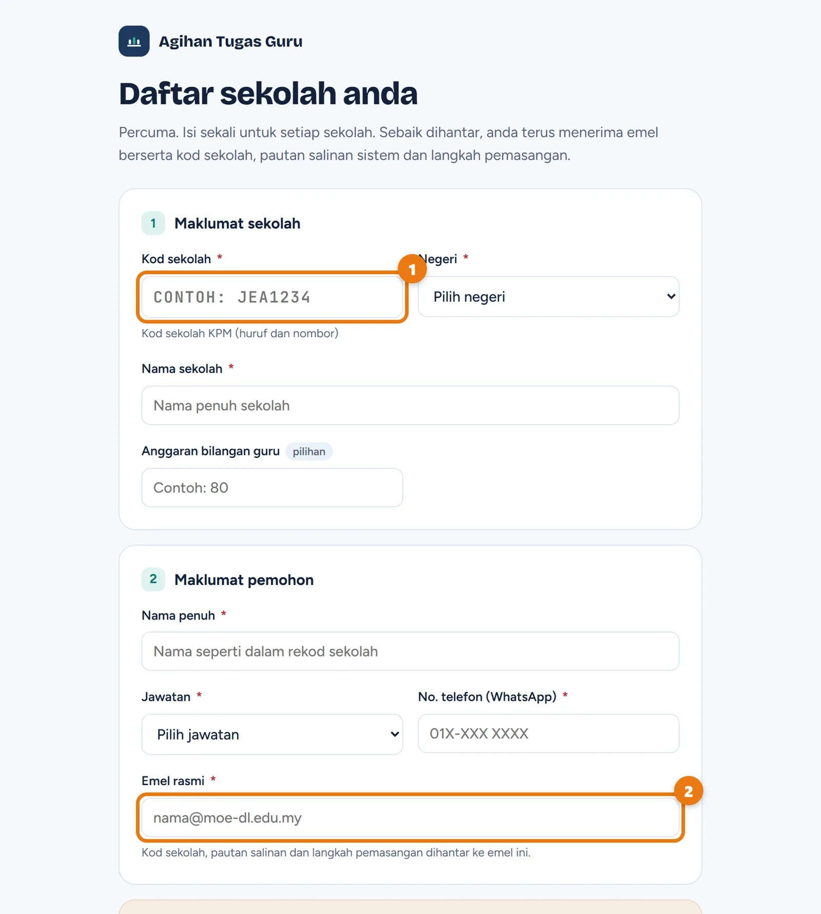
- Buat salinanBuka pautan salinan dalam emel pendaftaran dan klik Make a copy (1). Pastikan anda log masuk dengan akaun sekolah supaya salinan disimpan dalam Drive sekolah. Kod sistem ikut disalin bersama.
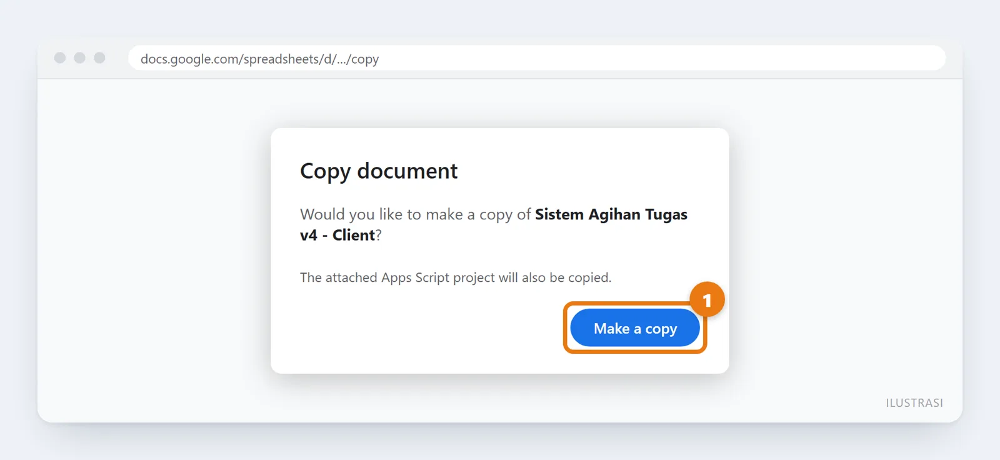
- Buka Apps ScriptDalam salinan anda, klik menu Extensions (1), kemudian Apps Script (2). Editor Apps Script dibuka dalam tab baharu.
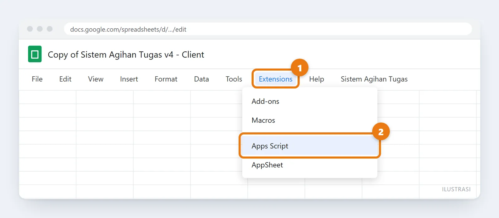
- Terbitkan sebagai web appKlik Deploy (1) › New deployment (2). Dalam tetingkap seterusnya, pilih jenis Web app (1). Tetapkan Execute as: Me (2) dan Who has access: Anyone within domain sekolah (3), kemudian klik Deploy (4).
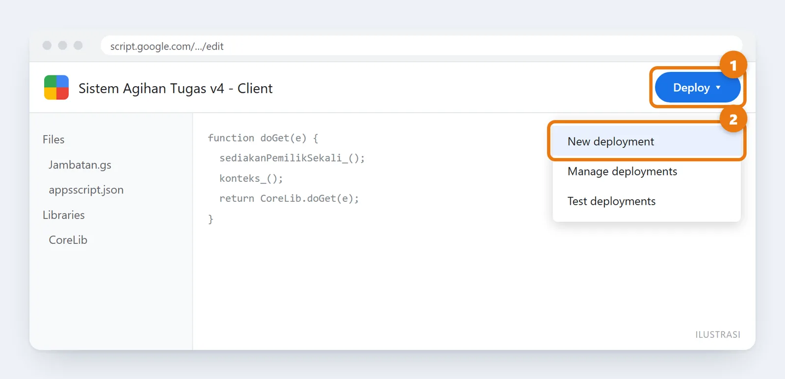
Deploy › New deployment 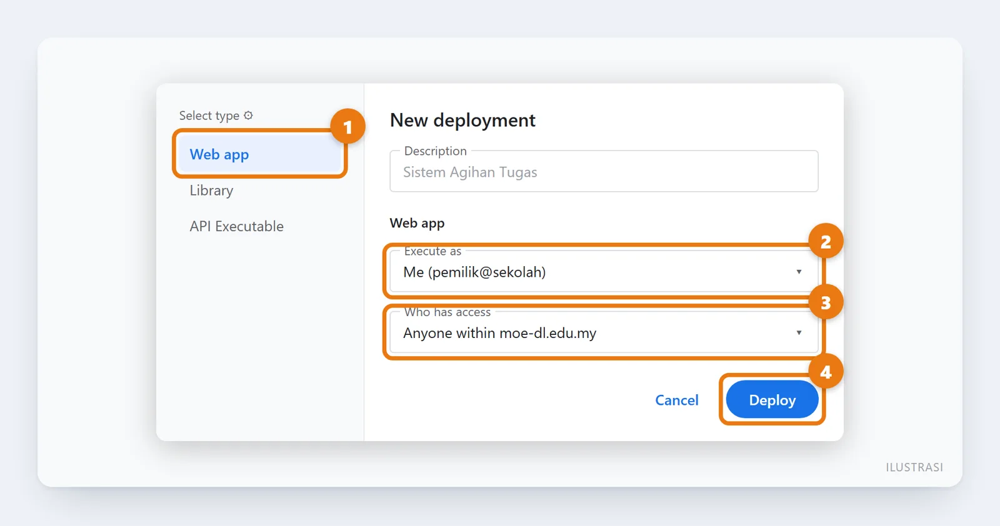
Tetapan web app - Beri kebenaran (Authorize)Klik Authorize access dan pilih akaun sekolah anda. Jika Google memaparkan amaran Google hasn’t verified this app, klik Advanced (1) › Go to … (unsafe) (2). Amaran ini biasa bagi skrip yang dibuat sendiri. Kemudian tandakan Select all (1) dan klik Continue (2).
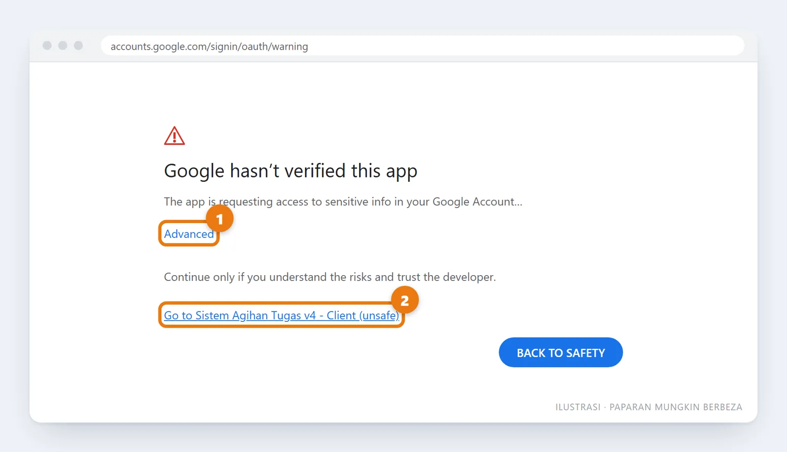
Jika amaran ini muncul 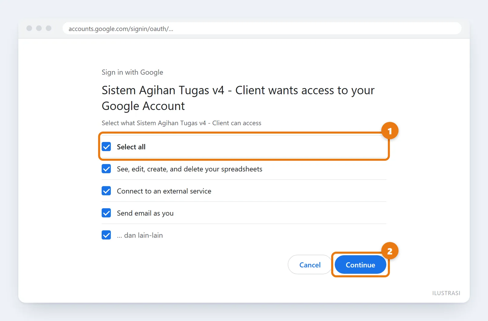
Tanda Select all Wajib tanda Select all. Jika ada kotak yang tidak ditanda, sistem tidak dapat menyemak kod sekolah atau menghantar emel. Untuk membetulkannya, buka Sheet › Sistem Agihan Tugas › Pasang / semak pangkalan data dan beri kebenaran semula dengan semua kotak ditanda.
- Salin URL web appSelepas deployment berjaya, klik Copy (1) pada URL web app. Ini alamat sistem anda. Simpan atau tandakan (bookmark) URL ini. Terlupa URL? Lihat cara mencari semula URL web app.
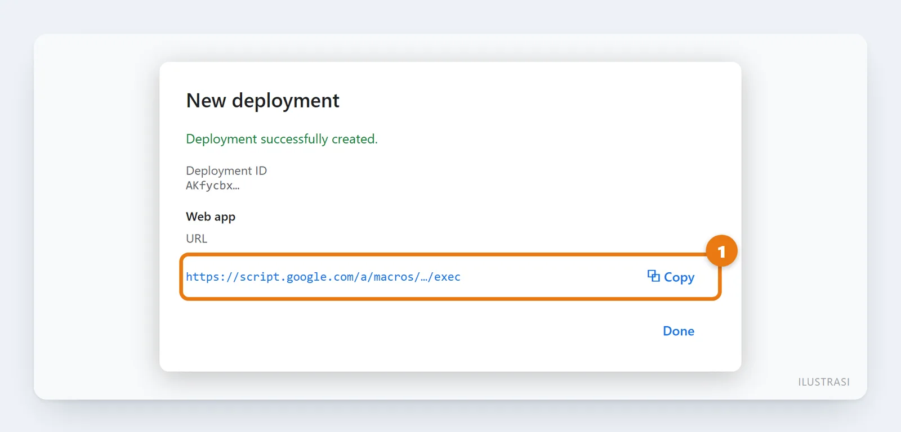
- Buka sistem dan aktifkanBuka URL tadi. Skrin Aktifkan Sistem meminta kod sekolah. Masukkan kod daripada emel (1) dan klik Aktifkan sistem (2). Anda sebagai pemilik salinan menjadi pentadbir (ADMIN) secara automatik.
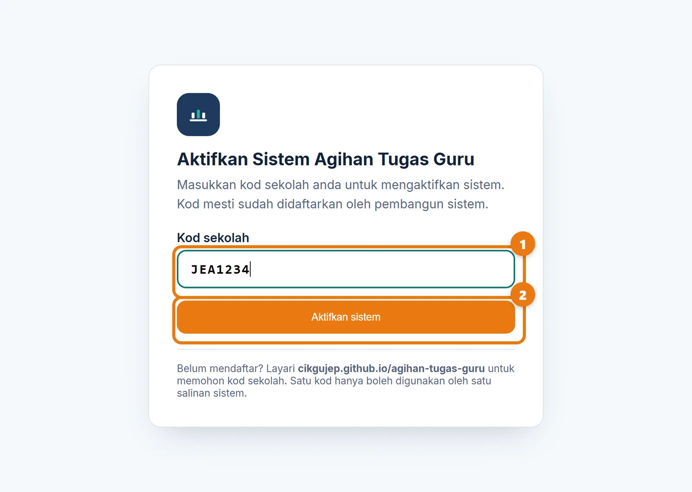
- Cuba, kemudian buang data contohSalinan sudah mengandungi data sebuah sekolah contoh dengan agihan yang seimbang. Selepas meneroka, buka Sheet dan pilih Sistem Agihan Tugas (1) › Buang data contoh (2). Hanya rekod contoh dibuang.
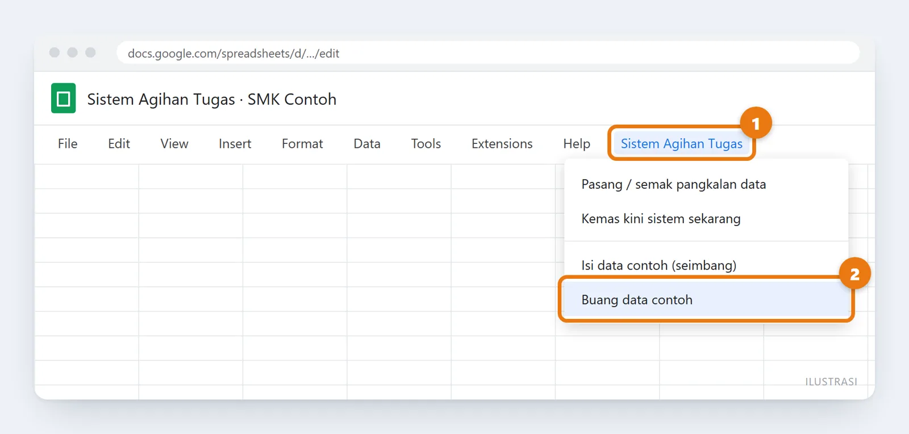
- Isi data sekolahLengkapkan Tetapan › Sekolah: muat naik logo (1), alamat dan tandatangan. Nama dan kod sekolah diisi automatik ikut pendaftaran. Semak senarai gred dan jawatan, import senarai guru di menu Guru, kemudian sediakan jawatankuasa.
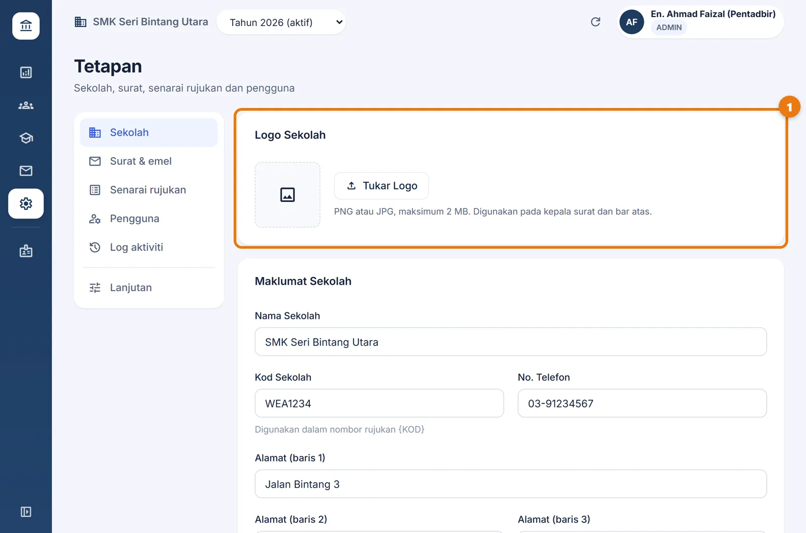
- Beri akses kepada warga sekolahDi Tetapan › Pengguna, hidupkan Akses terbuka (1) supaya semua akaun sekolah boleh masuk sebagai GURU, atau guna menu ⋯ (2) › Beri akses GURU kepada semua guru. Tambah PK bersama bidang masing-masing, kemudian kongsi URL web app kepada guru.
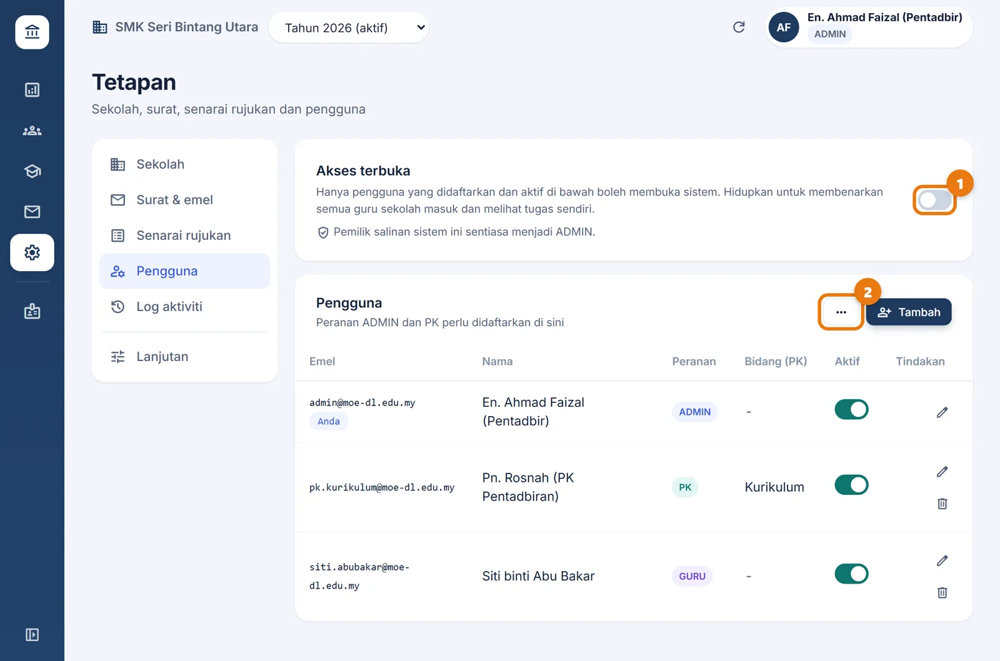
- Hidupkan kemas kini automatikBuka script.google.com/home/usersettings dengan akaun pemilik salinan dan tukar Google Apps Script API kepada On (1). Setiap hari sistem menyemak versi terkini dan mengemas kini dirinya sendiri. Jika tidak dihidupkan, ADMIN akan nampak banner bersama langkah kemas kini manual.
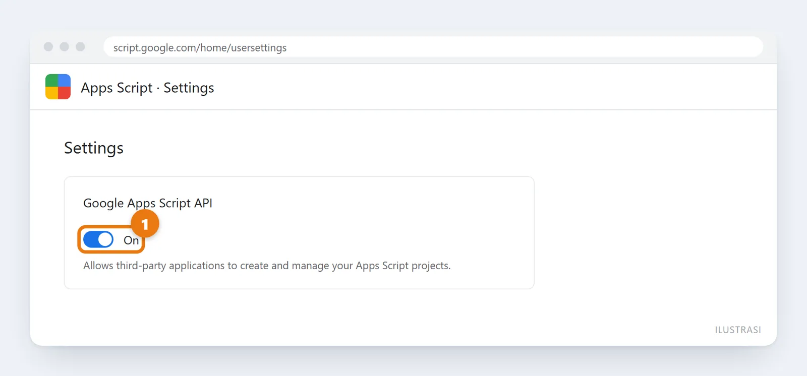
Gambar skrin Google ialah ilustrasi ringkas. Paparan sebenar mungkin sedikit berbeza mengikut versi Google. Klik gambar untuk melihat saiz penuh.
Jika menu Sistem Agihan Tugas tidak kelihatan dalam Sheet, muat semula halaman Sheet selepas langkah 2.
Siapa boleh buat apa
Sistem mengenal pengguna melalui akaun Google mereka. Pemilik salinan sistem sentiasa ADMIN, walaupun emelnya tiada dalam senarai pengguna. Pengguna lain mesti didaftarkan dan aktif di Tetapan › Pengguna, kecuali jika Akses terbuka dihidupkan: sesiapa yang log masuk dengan akaun domain sekolah boleh masuk sebagai GURU. ADMIN dan PK tetap perlu didaftarkan.
| Peranan | Boleh buat |
|---|---|
| ADMIN | Semua perkara: tetapan, pengguna, guru, semua jawatankuasa, surat dan emel. |
| PK | Melantik dan menukar ahli dalam jawatankuasa bidangnya sahaja. Melihat Analisis dan Tugas Guru. Menu Guru, Surat dan Tetapan hanya untuk ADMIN. |
| GURU | Melihat Tugas Saya: lantikan sendiri, Indeks Beban sendiri dan surat sendiri. Guru tidak melihat indeks rakan. |
Aliran kerja setahun
- Sediakan tetapanProfil sekolah, logo, tandatangan Pengetua, senarai gred dan jawatan.
- Masukkan guruTambah satu demi satu atau import CSV. Tandakan status (Aktif, Cuti, Bertukar keluar) dan tag seperti PK atau GKMP.
- Isi masa mengajarDi menu Guru, isi jumlah masa seminggu (contohnya 30 masa) dan tanda jika guru mengajar kelas peperiksaan.
- Sediakan jawatankuasaSetiap JK ada bidang, tahap (Utama, Sokongan, Sampingan) dan jenis tempoh. Pada awal tahun, guna Salin lantikan dari tahun lepas.
- Lantik ahliDi Jawatankuasa › Urus ahli, pilih guru bagi setiap jawatan. Calon disusun daripada beban paling rendah.
- Semak AnalisisLihat siapa terbeban, siapa masih ada ruang, dan JK yang belum lengkap. Tukar tugas terus dari profil guru.
- Jana dan hantar suratDi menu Surat. Jika lantikan berubah selepas itu, surat guru terlibat ditanda perlu dijana semula.
Cara guna, langkah demi langkah
Bahagian ini mengikut urutan kerja sebenar. Jika anda baru mula, ikut dari atas ke bawah. Gambar menggunakan data contoh rekaan.
Mula dari Analisis
Analisis ialah halaman utama ADMIN dan PK. Kad Lengkapkan persediaan sistem menyenaraikan perkara yang belum disediakan, seperti logo, tandatangan dan templat surat. Klik setiap item untuk terus ke tempatnya.
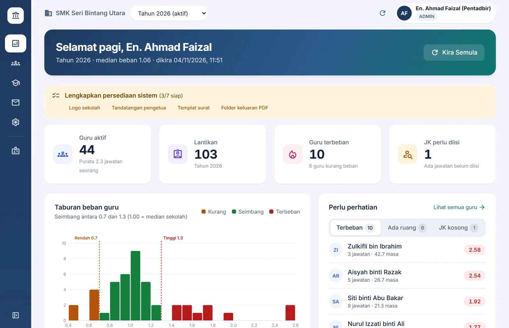
- Taburan beban menunjukkan bentuk sekolah. Jika kebanyakan bar berada di tengah, agihan sudah sihat.
- Perlu perhatian ialah senarai kerja anda: tab Terbeban, Ada ruang dan JK kosong. Klik nama guru untuk membuka profil.
- Kira Semula jarang diperlukan. Indeks dikira semula setiap kali data disimpan dalam sistem. Tekan butang ini hanya selepas menyunting Sheet secara terus atau menukar ambang.
Sediakan senarai guru
Buka menu Guru. Cara paling cepat ialah Import (4) › Import senarai guru. Sediakan lajur Nama, Emel, Gred dan Status dalam Excel atau Google Sheets, kemudian salin dan tampal. Guru yang emelnya sudah wujud dikemas kini, bukan ditambah semula.
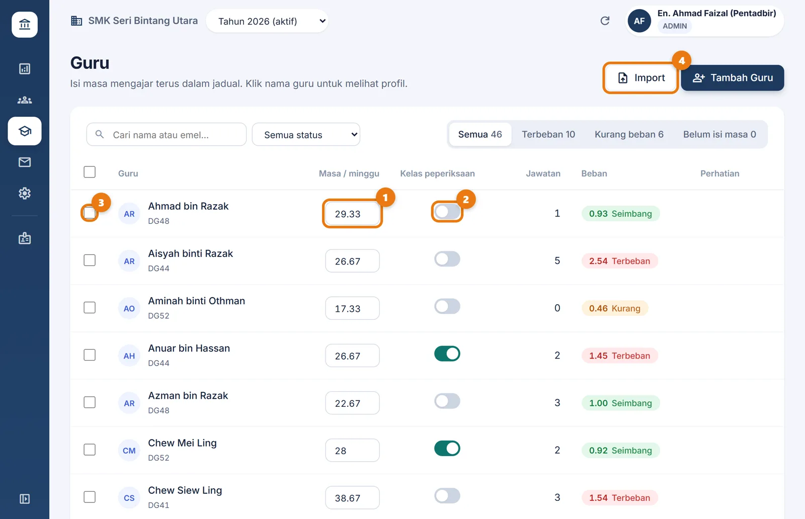
- Masa / minggu (1): isi bilangan masa terus dalam jadual, contohnya 28.
- Kelas peperiksaan (2): hidupkan bagi guru yang mengajar kelas peperiksaan. Tiada kesan selagi faktor peperiksaan ialah 1.0.
- Selepas mengubah masa, tekan Simpan pada bar di bawah skrin.
- Kotak tanda (3): tanda beberapa guru untuk dibuang sekali gus. Untuk mengosongkan senarai, pilih Import › Buang semua guru (reset) dan taip PADAM. Lantikan, masa mengajar dan log surat guru itu turut dibuang, dan tindakan ini tidak boleh dibatalkan.
Emel guru mesti sama dengan akaun Google yang digunakan untuk membuka sistem. Jika berbeza, guru akan melihat "Akaun belum dipautkan" di Tugas Saya.
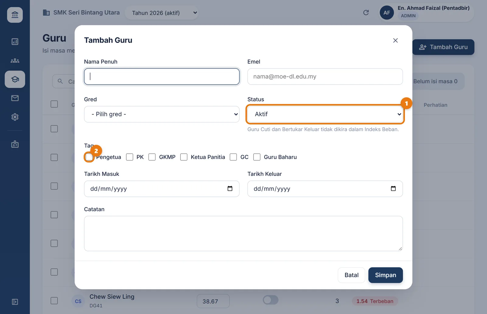
Dua ruangan dalam borang guru yang paling kerap ditanya:
| Ruangan | Pilihan | Kesan |
|---|---|---|
| Status (1) | Aktif | Dikira dalam indeks dan median. |
| Cuti | Tiada indeks dan tidak mempengaruhi median. Lantikan kekal dan ditanda Tidak aktif. | |
| Bertukar keluar | Sama seperti Cuti, dan tidak disalin ke tahun seterusnya. | |
| Tag (2) | Pengetua, PK, GKMP | Secara lalai tidak dikira dalam indeks kerana peranan mereka berbeza. |
| Ketua Panitia, GC, Guru Baharu | Dikira, kecuali sekolah memilih untuk mengecualikannya di Tetapan › Lanjutan. |
Sediakan jawatankuasa
Di menu Jawatankuasa, tekan Tambah Jawatankuasa. Dua pilihan dalam borang ini paling mempengaruhi kiraan, jadi putuskan secara konsisten untuk semua JK.
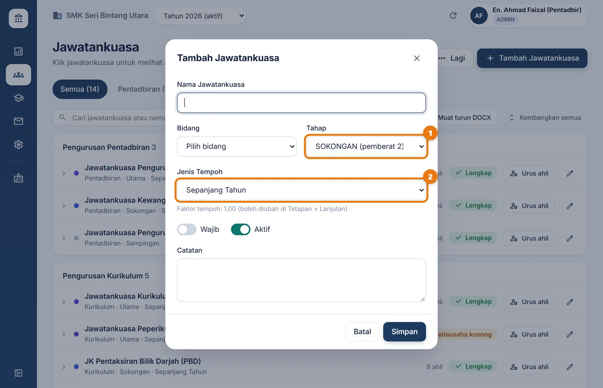
| Pilihan | Nilai lalai | Cadangan penggunaan |
|---|---|---|
| Tahap (1): Utama | × 3 | JK teras sekolah. Kerjanya banyak dan kesannya meluas. |
| Sokongan | × 2 | JK yang menyokong bidang utama. |
| Sampingan | × 1 | JK kecil atau yang kerjanya ringan. |
| Jenis tempoh (2): Sepanjang tahun | × 1.0 | Kerja berterusan sepanjang tahun. |
| Bermusim | × 0.6 | Aktif pada musim tertentu sahaja. |
| Program | × 0.3 | Tertumpu pada satu acara atau program. |
Ini hanya cadangan. Sekolah yang menentukan JK mana berada pada tahap mana. Perkara penting ialah ukuran yang sama digunakan untuk semua JK.
- Bidang: PK hanya boleh mengurus JK dalam bidangnya.
- Aktif: matikan jika JK tidak lagi digunakan. Lantikannya tidak dikira, dan rekod lama kekal.
- Wajib: penanda pada JK sahaja dan tidak mengubah skor. Amaran "Jawatan wajib kosong" datang daripada jawatan yang ditanda wajib di Tetapan › Senarai rujukan › Jawatan.
Lantik ahli
- Buka Urus ahliDi menu Jawatankuasa, tekan Urus ahli pada JK berkenaan.
- Klik posisiKlik posisi seperti Pengerusi atau Setiausaha. Jika perlukan posisi lain, pilih jawatan dan tekan Tambah posisi.
- Pilih guruCalon disusun daripada beban paling rendah. Setiap calon menunjukkan Beban sekarang dan Jika dilantik, jadi anda nampak kesannya sebelum memilih. Label Cadangan menandakan calon dengan beban terendah selepas lantikan dan tanpa amaran.
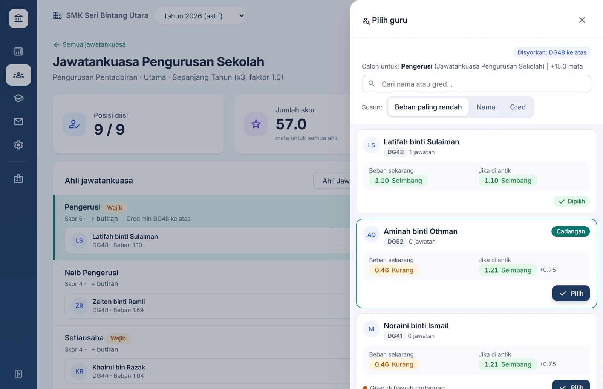
- Tambah butiran jika perluTekan + butiran untuk menulis unit atau kelas, contohnya "1 Al Biruni" atau "Kelab Hoki". Sistem menggunakannya untuk menyusun ahli.
- SimpanPerubahan belum disimpan selagi anda tidak menekan Simpan pada bar di bawah skrin. Jika ada amaran, pilih Tukar Guru atau Simpan Juga jika anda ada sebab untuk meneruskan.
Selesaikan guru terbeban
Inilah kerja utama sistem. Di Analisis, buka tab Terbeban dan klik nama guru. Profil menunjukkan punca bebannya: masa mengajar atau tugas.
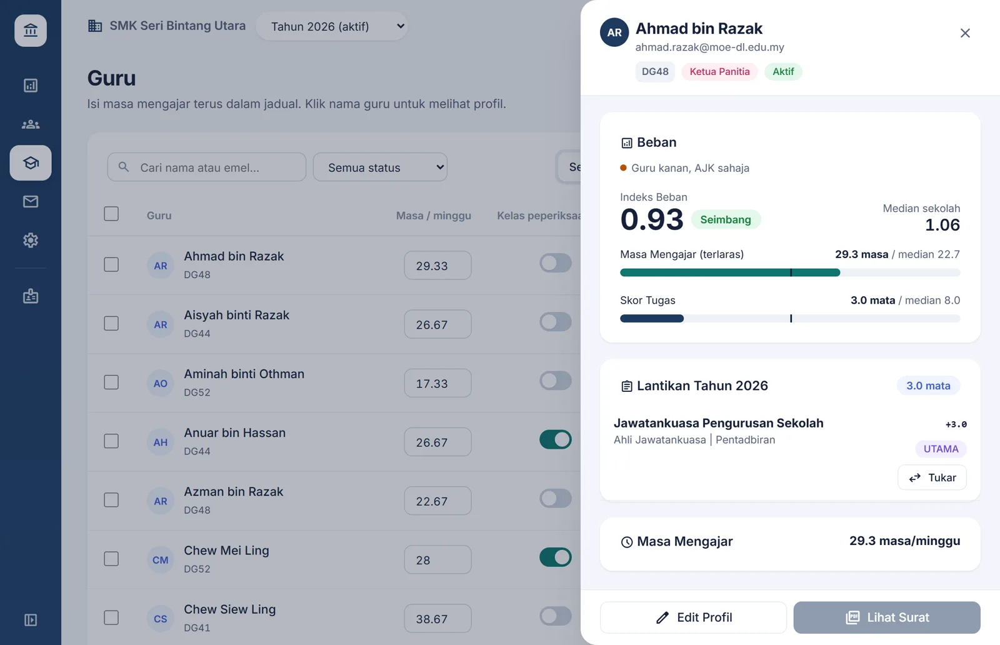
Selepas menukar lantikan, surat kedua-dua guru ditanda perlu dijana semula. Selesaikan semua pelarasan dahulu, kemudian barulah jana surat.
Perubahan sepanjang tahun
| Situasi | Apa perlu dibuat |
|---|---|
| Guru baharu masuk | Tambah Guru, isi masa mengajar, kemudian lantik. Tag Guru Baharu jika perlu. |
| Guru bertukar keluar | Tukar status kepada Bertukar keluar, kemudian tukar lantikannya kepada guru lain. Jangan padam supaya rekod lama kekal. |
| Guru cuti panjang | Tukar status kepada Cuti. Jika tugasnya perlu diteruskan, gantikan guru dalam lantikan itu. Tukar semula kepada Aktif apabila guru kembali. |
| Jawatan kosong sementara | Simpan posisi tanpa guru. Posisi ditanda Belum diisi dan tidak keluar dalam surat. |
| JK baharu ditubuhkan | Tambah Jawatankuasa, kemudian Urus ahli. |
| JK dibubarkan | Edit JK dan matikan Aktif. JK yang ada rekod lantikan tidak boleh dipadam. |
Masuk tahun baharu
- Tetapkan tahun aktifTetapan › Lanjutan › Tahun & ujian. Tahun aktif ialah tahun lalai semasa sistem dibuka.
- Kemas kini guru dan masa mengajarTambah guru baharu dan tukar status guru yang keluar. Masa mengajar tidak disimpan mengikut tahun, jadi nilai semasa digunakan untuk tahun yang dipilih. Kemas kini mengikut jadual waktu baharu.
- Salin lantikanJawatankuasa › Lagi › Salin lantikan dari tahun lepas. Pratonton menunjukkan bilangan yang akan disalin dan jawatan yang perlu diisi semula. Guru yang bertukar keluar tidak disalin.
- Laraskan dan keluarkan suratSemak Analisis, laraskan agihan dan bawa ke mesyuarat. Selepas dipersetujui, jana dan hantar surat.
Untuk PK dan guru
Mengurus tugas
Tukar guru terus dari profil
Klik nama mana-mana guru di Analisis atau menu Guru. Setiap lantikan dalam profil ada butang ⇄ Tukar. Calon pengganti disusun daripada beban paling rendah, lengkap dengan indeks sekarang dan jika dilantik. Surat kedua-dua guru ditanda perlu dijana semula.
Simpan posisi kosong
Di Urus ahli, tekan Tambah posisi dan simpan walaupun belum memilih guru. Posisi itu dipaparkan sebagai Belum diisi sehingga diisi, dan tidak keluar dalam surat.
Butang ✕ pada guru mengosongkan posisi tetapi posisi itu kekal. Tekan ✕ sekali lagi untuk membuang posisi sepenuhnya.
Susunan ahli yang automatik
Muat turun senarai jawatankuasa (Word)
Di menu Jawatankuasa, tekan Muat turun DOCX. Fail .docx disusun seperti buku pengurusan sekolah: nama jawatankuasa (tebal), diikuti Jawatan : Nama bagi setiap ahli, dengan titik bertindih yang sejajar.
- Pilih sama ada JK yang sedang dipaparkan (ikut tab, carian dan tapisan) atau semua JK aktif.
- Nama HURUF BESAR boleh ditukar kepada huruf biasa, dan gelaran En/Pn ditambah ikut bin/binti. Semak gelaran (contohnya Cik) sebelum dicetak.
- "AJK" ditulis Ahli dan "Penolong Setiausaha" ditulis Pen. Setiausaha.
Cara beban dikira
Setiap guru diberi satu nombor, Indeks Beban, yang menggabungkan masa mengajar dan tugas jawatankuasa. Kedua-duanya dibandingkan dengan guru biasa di sekolah anda sendiri, jadi 1.00 bermaksud setara dengan guru biasa.
1 · Skor setiap tugas
2 · Bandingkan dengan guru biasa
Nisbah tugas = jumlah skor tugas ÷ median sekolah
3 · Gabungkan
| Indeks | Label | Maksud |
|---|---|---|
| lebih 1.30 | Terbeban | Lebih 30% berat daripada guru biasa. |
| 0.70 – 1.30 | Seimbang | Dalam julat wajar. |
| bawah 0.70 | Kurang beban | Masih ada ruang untuk tugas tambahan. |
Cuba sendiri
Masa mengajar
Tugas jawatankuasa
Andaian guru biasa di sekolah
Memilih ambang
Ambang ialah piawai, bukan kuota. Matlamatnya ialah sifar guru terbeban, dicapai dengan mengagihkan semula tugas, bukan dengan menaikkan ambang sehingga tiada sesiapa ditanda.
Amaran
Sistem memaparkan amaran dalam bahasa biasa. Kod W hanya muncul apabila tetikus dihalakan pada amaran.
| Amaran | Bila muncul |
|---|---|
| Terbeban W01 | Indeks melebihi ambang tinggi. |
| Kurang beban W02 | Indeks di bawah ambang rendah. |
| Banyak jawatan W03 | Bilangan lantikan melebihi had yang ditetapkan. |
| Gred di bawah cadangan W04 | Gred guru lebih rendah daripada yang dicadangkan bagi jawatan itu. |
| Guru kanan, AJK sahaja W05 | Guru kanan hanya memegang jawatan AJK. |
| Lantikan berganda W06 | Guru dilantik dua kali dalam JK dan unit yang sama. |
| Jawatan wajib kosong W07 | JK belum mengisi jawatan bertanda Wajib. |
| Tidak aktif W08 | Guru Cuti atau Bertukar keluar masih memegang lantikan. |
| Surat perlu dijana semula W09 | Lantikan berubah selepas surat dijana. |
| Semak emel W10 | Format emel salah atau bukan domain sekolah. |
Surat & emel
- Sediakan templat sekaliTetapan › Surat & emel › Sediakan Templat & Folder. Templat ialah Google Doc yang boleh anda sunting.
- JanaSatu PDF setiap guru. Halaman 1 ialah surat Pelantikan Tugas-tugas Rasmi. Halaman 2 ialah Lampiran A, senarai tugasan disusun ikut bidang.
- HantarEmel dihantar berperingkat. Jika masa tamat, sistem menyambung sendiri tanpa menghantar dua kali.
Untuk kembali kepada reka bentuk surat asal, klik Cipta Semula Templat Lalai. Ruang isian yang disokong termasuk {{NAMA_GURU}} {{TAHUN}} {{NO_RUJUKAN}} {{JADUAL_LANTIKAN}} {{BIL_LANTIKAN}}.
Kuota emel harian Google terhad. Sistem menyemak kuota dahulu dan tidak menghantar jika tidak mencukupi.
Tetapan & data
| Tetapan | Lalai | Kesan |
|---|---|---|
| Bahagian mengajar | 60% | Berat masa mengajar dalam indeks; selebihnya tugas JK. |
| Ambang tinggi / rendah | 1.3 / 0.7 | Had Terbeban dan Kurang beban. |
| Faktor kelas peperiksaan | 1.0 | Pengganda masa bagi guru kelas peperiksaan. |
| Minit setiap masa | 30 | Penukar masa kepada minit. |
| Had bilangan jawatan | 8 | Melebihi had mencetuskan amaran Banyak jawatan. |
| Tidak dikira dalam indeks | Pengetua, PK, GKMP | Tag guru yang dikecualikan. |
| Akses terbuka | Tidak | Jika dibenarkan, semua guru dalam domain sekolah boleh masuk dan melihat tugas sendiri tanpa didaftarkan (Tetapan › Pengguna). |
| Nama & kod sekolah | Ikut pendaftaran | Dikunci; ubahan terus dalam Sheet dipulihkan. Hubungi pembangun untuk membetulkan. |
Nilai yang dibenarkan dalam Sheet
Jika anda menyunting Sheet secara terus, gunakan nilai berikut tepat seperti ditulis, kemudian tekan Kira semula di Analisis.
| Lajur | Nilai |
|---|---|
| GURU · status | AKTIF CUTI BERTUKAR_KELUAR |
| GURU · tag | PENGETUA PK GKMP KETUA_PANITIA GC GURU_BAHARU, boleh lebih satu dipisah koma |
| PENGGUNA · peranan | ADMIN PK (wajib isi id_bidang) GURU |
| JAWATANKUASA · tahap | UTAMA SOKONGAN SAMPINGAN |
| JAWATANKUASA · jenis_tempoh | SEPANJANG_TAHUN BERMUSIM PROGRAM |
| id_bidang | PENTADBIRAN KURIKULUM HEM KOKURIKULUM |
| Lajur Ya/Tidak | Y atau T sahaja |
| MENGAJAR · minit_seminggu | Dalam minit (32 masa = 960). Skrin memaparkan masa. |
Soalan lazim
Saya baru buka sistem. Nak mula dari mana?
Mula dari Roh sistem untuk memahami tujuannya, kemudian ikut Cara guna dari atas: tetapan, guru, masa mengajar, jawatankuasa, lantik, semak Analisis, surat.
Guru ditanda Terbeban. Adakah sistem salah, atau guru itu bermasalah?
Kedua-duanya tidak. Label itu bermaksud beban guru melebihi ambang berbanding guru lain di sekolah anda. Ia menunjukkan keadaan agihan, bukan kesalahan guru. Lihat Selesaikan guru terbeban.
Kenapa guru yang jawatannya sedikit tetapi indeksnya lebih tinggi daripada guru yang banyak jawatan?
Kerana indeks mengira berat, bukan bilangan. Satu jawatan Pengerusi JK Utama sepanjang tahun bernilai 15 mata, sama seperti 50 jawatan AJK program sampingan. Masa mengajar juga dikira. Buka profil guru untuk melihat puncanya.
Boleh ke indeks digunakan untuk menilai prestasi guru?
Tidak. Indeks ialah alat bantu keputusan agihan tugas. Ia tidak mengukur mutu kerja, dan hanya mengira perkara yang direkodkan dalam sistem.
Macam mana nak tentukan JK ini Utama, Sokongan atau Sampingan?
Sekolah yang memutuskan. Lihat cadangan penggunaan, bincang dalam mesyuarat, dan gunakan ukuran yang sama untuk semua JK.
Boleh tukar skor jawatan atau tambah jawatan baharu?
Boleh. Buka Tetapan › Senarai rujukan › Jawatan. Anda boleh mengubah skor, menambah jawatan, menetapkan gred minimum cadangan dan menanda jawatan wajib. Pemberat tahap dan faktor tempoh pula di Tetapan › Lanjutan.
Seorang guru boleh pegang dua jawatan dalam JK yang sama?
Boleh. Jika butirannya berbeza, contohnya penasihat dua kelab, sistem tidak menganggapnya lantikan berganda. Jika butirannya sama, amaran Lantikan berganda dipaparkan.
Sistem tak benarkan padam guru?
Butang Padam dalam profil menolak guru yang ada rekod lantikan, supaya rekod tidak hilang tanpa sengaja. Tukar status kepada Bertukar keluar. Jika memang mahu membuang guru bersama lantikannya, tanda guru itu di jadual Guru dan tekan Buang yang ditanda.
Guru nampak "Akaun belum dipautkan" di Tugas Saya?
Emel akaun Google guru itu tiada dalam senarai Guru. Betulkan emel di profil guru supaya sama dengan akaun yang digunakan.
Saya dah pilih guru, tapi lantikan hilang selepas keluar dari skrin?
Perubahan di Urus ahli belum disimpan sehingga anda menekan Simpan pada bar di bawah skrin.
Guru bersama ambil cuti bersalin. Apa jadi pada indeks orang lain?
Guru Cuti tidak termasuk dalam kiraan median, jadi median boleh berubah sedikit dan indeks guru lain ikut berubah. Tugas guru tersebut masih bersamanya sehingga anda menukar lantikan. Sistem menandanya sebagai Tidak aktif sebagai peringatan.
Terlupa URL web app sistem? Di mana nak cari semula?
URL sentiasa boleh dilihat semula oleh pemilik salinan:
- Buka salinan Sheet sistem sekolah anda (cari dalam Google Drive akaun sekolah).
- Klik Extensions › Apps Script.
- Klik Deploy (1) › Manage deployments (2).
- Pilih deployment yang aktif. URL di bawah Web app ialah alamat sistem anda. Klik Copy (3).
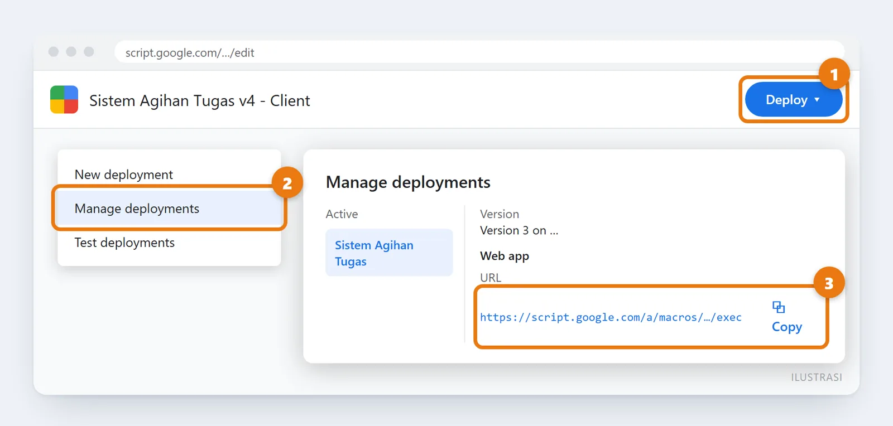
Jangan buat New deployment baharu semata-mata untuk mendapatkan URL. Setiap deployment baharu menghasilkan URL lain, jadi pautan yang sudah dikongsi kepada guru akan merujuk deployment lama. URL tidak berubah apabila sistem dikemas kini.
Guru yang terlupa URL boleh minta daripada pentadbir sistem. Pentadbir boleh menyalin URL daripada bar alamat pelayar semasa sistem dibuka dan berkongsi semula.
Kenapa indeks seorang guru berubah walaupun lantikannya sama?
Indeks dibandingkan dengan median sekolah. Apabila guru lain menerima lantikan baharu, median naik dan indeks guru lain turun sedikit.
Perlu ke skrin log masuk?
Tidak. Sistem mengenal pengguna melalui akaun Google sekolah dan senarai di Tetapan › Pengguna. Tiada kata laluan untuk diurus.
Guru mendapat skrin "Akses disekat" walaupun sudah didaftarkan?
Biasanya kerana pelayar log masuk beberapa akaun Google. Tekan Tukar akaun Google pada skrin itu dan pilih akaun sekolah, atau buka pautan dalam tetingkap Incognito.
Indeks ramai guru melonjak tinggi, contohnya 6.x?
Semak tahun yang dipilih di bahagian atas. Jika lantikan tahun itu belum lengkap, median skor tugas sangat rendah dan indeks menjadi besar. Lengkapkan lantikan atau salin dari tahun lepas.
Tanda kelas peperiksaan tiada kesan?
Betul selagi faktor peperiksaan ialah 1.0. Naikkan kepada 1.1 atau 1.2 di Tetapan › Lanjutan.
Siapa boleh melihat data sekolah kami?
Hanya pengguna yang anda daftarkan (atau semua akaun domain sekolah jika Akses terbuka dihidupkan, dan mereka hanya melihat tugas sendiri). Data berada dalam salinan Sheet milik sekolah anda; pembangun sistem tidak boleh melihatnya.
Nama atau kod sekolah dalam sistem salah?
Nama dan kod sekolah diambil daripada pendaftaran dan tidak boleh diubah di Tetapan. Balas emel pendaftaran untuk membetulkannya; sistem anda dikemas kini sendiri dalam masa kira-kira 20 minit.
Skrin "Aktifkan Sistem" memaparkan ralat?
Kod sudah digunakan oleh salinan lain: satu kod hanya untuk satu salinan; minta pembangun set semula jika anda membuat salinan baharu. Tidak berdaftar: semak ejaan kod atau daftar dahulu. Tidak dapat dihubungi: pastikan salinan dibuat daripada pautan terkini dalam emel.
Ralat "You do not have permission to call UrlFetchApp.fetch" semasa aktivasi?
Kebenaran "sambung ke perkhidmatan luar" tidak ditanda semasa Authorize. Buka Extensions › Apps Script, pilih fungsi pasang, klik Run dan tandakan semua kotak (Select all) sebelum Continue. Jika skrin kebenaran tidak muncul, buang akses projek itu di myaccount.google.com/permissions, kemudian ulang.
Boleh guna akaun Google selain DELIMa?
Boleh. Sistem berfungsi dengan mana-mana akaun Google Workspace sekolah. Pastikan guru menggunakan akaun domain yang sama dengan pemilik salinan supaya sistem dapat mengenal mereka.